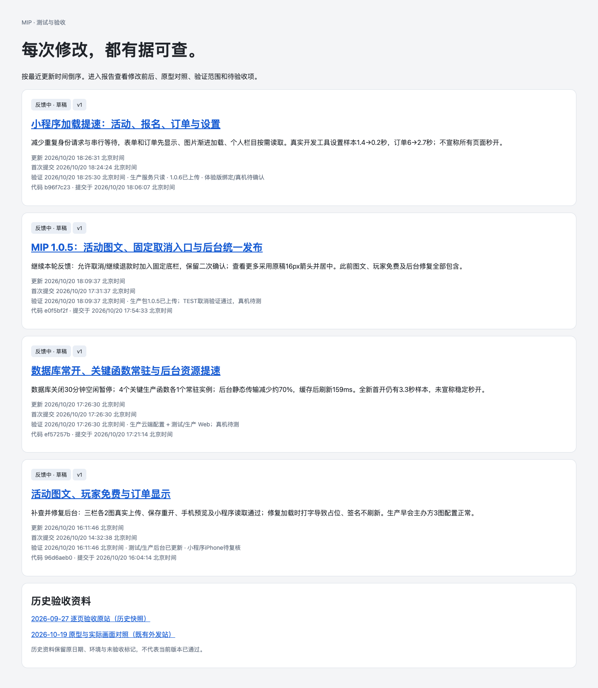
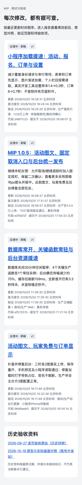

修改前 · 真实线上

2026-10-20；原画面来自真实HTTPS，修改后为本地构建，数据已合并今日五项报告；同为未登录公开页面。修改前后记录数量不同，未伪造为同数据。原图未重绘、拼接或裁切。


无对应设计原图。此独立验收资料站依据用户2026-10-20文字要求调整：首页突出时间线与主要要点，精确时间放子页面，今天修复集中并列多条。不以小程序或后台Figma冒充本站原型。


无对应设计原图。此独立验收资料站依据用户2026-10-20文字要求调整：首页突出时间线与主要要点，精确时间放子页面，今天修复集中并列多条。不以小程序或后台Figma冒充本站原型。
部署23c2efc2，真实域名165文件与产物一致；桌面和手机浏览器通过。
1440、1280、390视口：首页→当天汇总→五份完整报告；图片全部实际解码、无横向溢出与pageerror。版本、首次提交时间和精确验证信息保留在原报告。合并与发布结果见同目录README及线上回读记录。